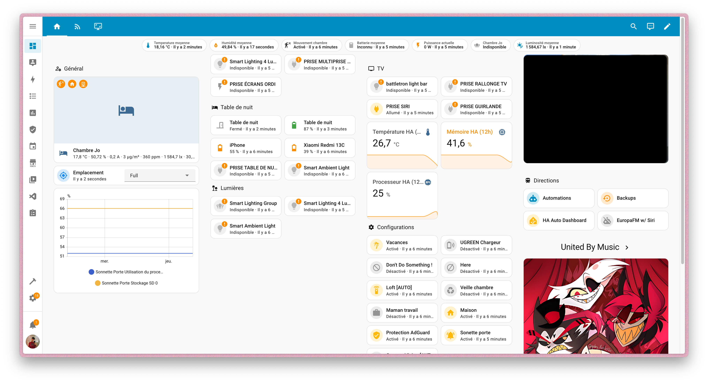

Laboratoire personnel
Mes projets personnels
Intégration IAM & SSO : Auth0 / Infomaniak
Ce projet technique, réalisé au sein de mon infrastructure personnelle, visait à résoudre une problématique complexe d'interopérabilité entre deux écosystèmes majeurs : Auth0 (gestionnaire d'identité) et la suite collaborative Infomaniak kSuite. L'objectif était de mettre en place une authentification unique (SSO) fluide et sécurisée pour l'environnement Skynium.
Confronté aux limitations du protocole SAML dans ce contexte spécifique, j'ai pivoté vers une architecture basée sur OAuth2. Ce défi m'a amené à manipuler des API REST, à déboguer des flux d'authentification et à développer des scripts personnalisés (en JavaScript) pour assurer le mappage correct des données utilisateurs (User Mapping) entre les deux fournisseurs. Ce projet démontre ma capacité à lier des briques logicielles hétérogènes pour créer une expérience utilisateur unifiée.
Avertissement
Avertissement Légal : Les marques citées (telles que Infomaniak™, Auth0™, etc.) appartiennent à leurs propriétaires respectifs. L'utilisation de ces noms est faite ici à titre purement descriptif et pédagogique dans le cadre d'un portfolio étudiant (Fair Use), afin d'illustrer les compétences techniques acquises sur ces technologies. Ce site n'a aucune affiliation commerciale, partenariat ou lien officiel avec les entreprises mentionnées.
Domotique : Automatisation de ma chambre
Au-delà du simple gadget, j'ai transformé mon espace personnel en un véritable environnement réactif grâce à HomeAssistant. Ce projet perpétuel est mon terrain de jeu pour expérimenter l'Internet des Objets (IoT). J'y intègre des protocoles variés pour centraliser le contrôle de l'éclairage, la sonnerie et du multimédia, le tout sans dépendre du cloud.
L'emploi Du Temps : SSH (Skynium Student Hub)
Face à la lenteur de la plateforme officielle (ADE), j'ai cuisiné ma propre solution : le SSH (Skynium Student Hub). C'est une interface web ultra-rapide conçue pour servir l'emploi du temps aux étudiants de l'IUT R&T de Luminy sans temps de chargement indigeste.
La recette secrète ? Un script backend ("La mise en place") s'exécute automatiquement chaque nuit à 04h00 du matin pour récupérer et cacher les données. Le système est intelligent : en se connectant, l'élève ne voit que le "Menu" qui le concerne. L'affichage filtre dynamiquement les cours selon son groupe de TP ou de TD, offrant une expérience personnalisée et épurée.
🚀 Performance : 5x plus rapide que l'outil officiel.
En Mijotage : Infrastructure Cloud & Raspberry Pi
Ma prochaine expérimentation hardware ("Le plat de résistance") consistera à déployer un serveur Linux autonome sur un Raspberry Pi. L'objectif est de m'affranchir des solutions propriétaires pour créer mon propre cloud personnel.
Je vais me concentrer sur la sécurité d'accès distant (Remote Access) en adoptant une architecture Zero Trust. Je prévois de comparer et d'implémenter des solutions comme Cloudflare Tunnel ou Tailscale. Cela me permettra d'accéder à mes conteneurs et fichiers depuis n'importe où, sans exposer de ports inutilement sur ma box internet.
⏲️ Statut : Commande du matériel en cours / Phase de conception.
R&D : Virtualisation & Services Réseaux (Labo R&T)
Inspiré par mes cours en IUT R&T, je souhaite transformer mon Raspberry Pi en un véritable hyperviseur de poche. L'objectif est de segmenter mon infrastructure via des machines virtuelles (VM) ou des conteneurs pour recréer un réseau d'entreprise miniature.
Je compte y déployer et configurer manuellement les services fondamentaux d'Internet : un serveur DHCP pour la distribution d'adresses et un serveur DNS local (peut-être couplé à un Pi-hole) pour la résolution de noms. C'est pour moi la meilleure façon de "mettre les mains dans le cambouis" et de maîtriser les protocoles qui régissent nos échanges numériques, tout en m'amusant à construire une architecture résiliente.